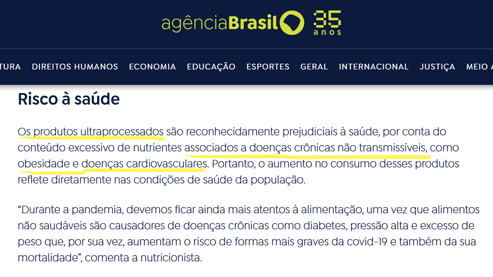
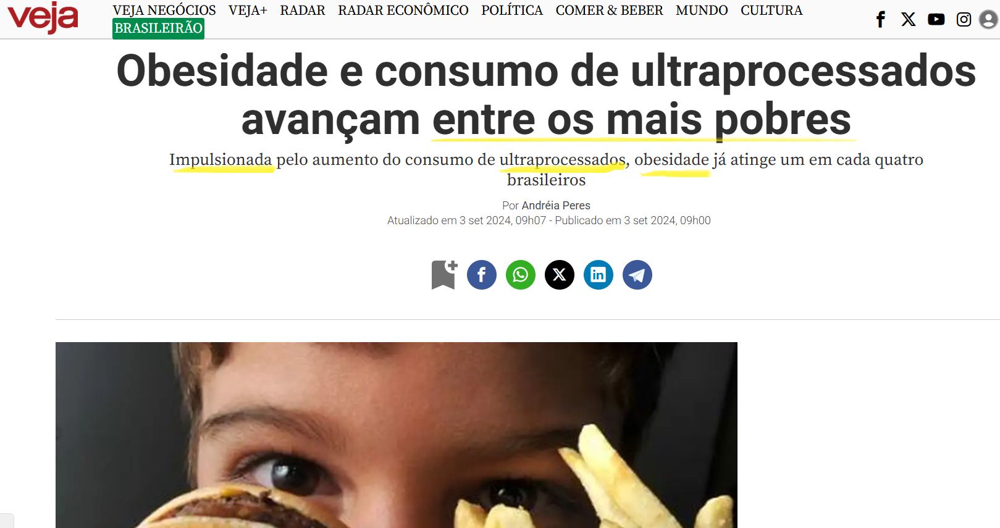
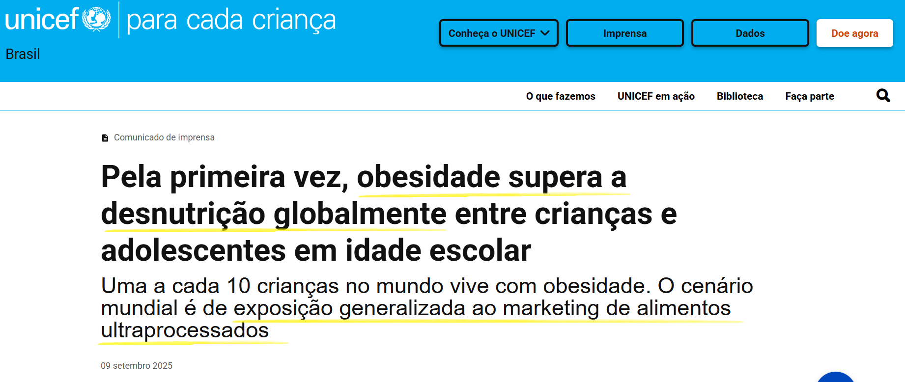
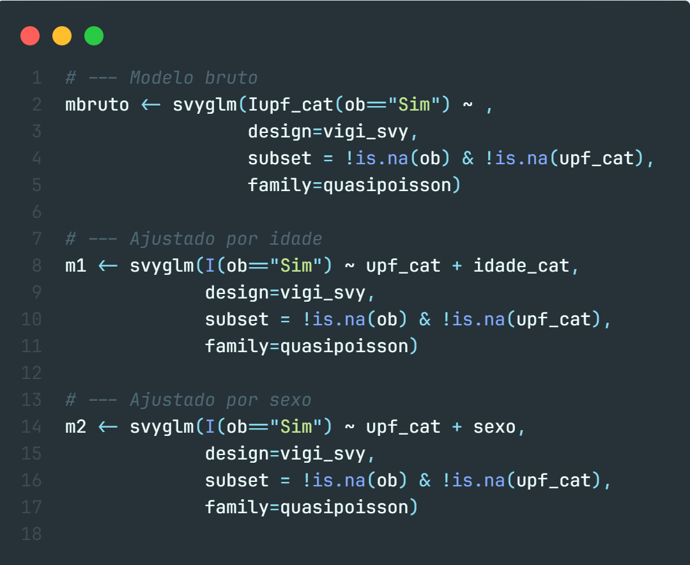
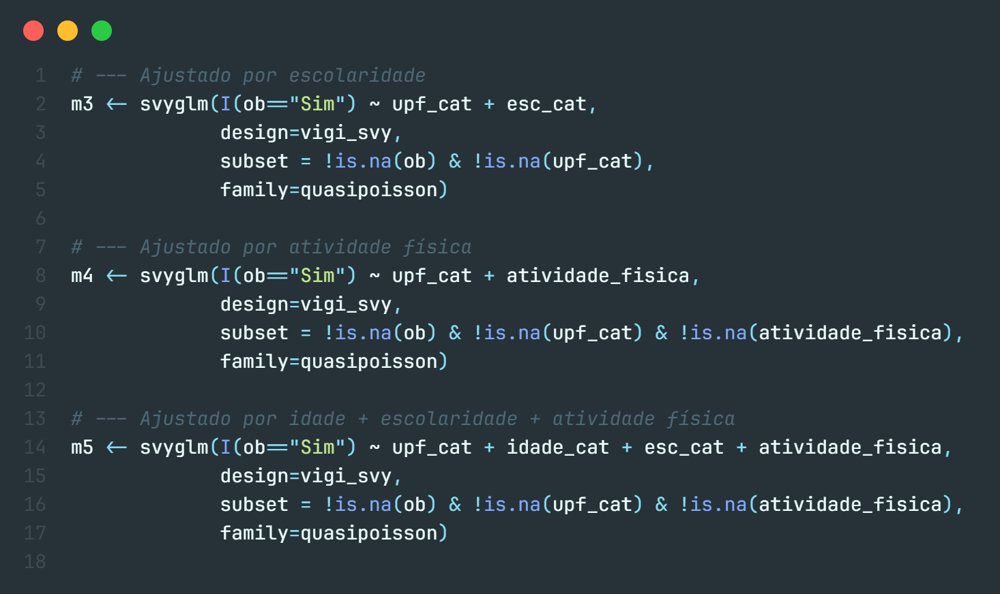

2.5% 97.5%
I(ob == "Sim") 0.240 0.227 0.253MAT02268 - Bioestatística A
- Sistema de Vigilância de Fatores de Risco e Proteção para Doenças Crônicas por Inquérito Telefônico -
Objetivo:
Monitorar anualmente a situação de saúde da população brasileira, por meio da distribuição dos principais fatores de risco e proteção para as DCNT’s.
Hipótese principal: O consumo frequente de ultraprocessados está associado a maior prevalência de obesidade em adultos brasileiros.
Justificativa: Ultraprocessados são reconhecidos pela literatura como fator de risco para doenças crônicas (densidade energética, sódio, gorduras trans/saturadas, aditivos).
Os alimentos ultraprocessados são produtos industriais feitos com substâncias artificiais ou extraídas de alimentos. Têm como característica serem saborosos, práticos e de baixo custo.
Geralmente pobres em nutrientes e ricos em calorias, açúcar, gordura e aditivos químicos.



\[ IMC = \frac{peso(kg)}{altura(m)^2} \]
#prevalência de consumo de ultraprocessados por grupo de idade
svyby(~I(upf_cat=="Sim"), ~idade_cat, design=vigi_svy, svyciprop, vartype="ci") idade_cat I(upf_cat == "Sim") ci_l ci_u
18-34 18-34 0.24317373 0.22109572 0.2667015
35-59 35-59 0.15698813 0.14106060 0.1743490
60+ 60+ 0.09396333 0.07922762 0.1111090🔹 Por que usamos modelos de regressão neste estudo?
🔹 Para estimar a Razão de Prevalência utilizamos a Regressão de Poisson com variânca robusta.
🔹 Razão de Prevalência é a medida de associação recomendada para estudos transversais com desfechos não raros (obesidade). Usando Odds Ratio superestimaríamos a magnitude de associação.
🔹 Interpretação direta: “consumidores de UPF têm x% mais/menos prevalência de obesidade comparados aos não consumidores”.
 
| Razões de Prevalência (RP) – Obesidade vs Consumo de Ultraprocessados | ||||
|---|---|---|---|---|
| Modelo | RP | IC95% (inferior) | IC95% (superior) | p-valor |
| Bruta | 0.89 | 0.77 | 1.02 | 0,090 |
| Ajustada por Idade | 0.92 | 0.79 | 1.06 | 0,232 |
| Ajustada por Sexo | 0.89 | 0.77 | 1.02 | 0,096 |
| Ajustada por Escolaridade | 0.89 | 0.77 | 1.03 | 0,111 |
| Ajustada por Atividade Física | 0.88 | 0.77 | 1.01 | 0,074 |
| Ajustada por Idade + Escolaridade + Atividade Física | 0.90 | 0.78 | 1.04 | 0,165 |
| Razões de Prevalência (RP) – Consumo de Ultraprocessados e Doenças Crônicas | |||||
|---|---|---|---|---|---|
| Desfecho | Modelo | RP | IC95% (inferior) | IC95% (superior) | p-valor |
| Obesidade | Bruto | 0.89 | 0.77 | 1.02 | 0,090 |
| Obesidade | Ajustado | 0.90 | 0.78 | 1.04 | 0,160 |
| Hipertensão | Bruto | 0.69 | 0.60 | 0.80 | <0,001 |
| Hipertensão | Ajustado | 0.90 | 0.78 | 1.03 | 0,131 |
| Diabetes | Bruto | 0.56 | 0.42 | 0.73 | <0,001 |
| Diabetes | Ajustado | 0.82 | 0.64 | 1.06 | 0,124 |
| Razões de Chances (OR) – Consumo de Ultraprocessados e Doenças Crônicas | |||||
|---|---|---|---|---|---|
| Desfecho | Modelo | OR | IC95% (inferior) | IC95% (superior) | p-valor |
| Obesidade | Bruto | 0.85 | 0.71 | 1.02 | 0,086 |
| Obesidade | Ajustado | 0.87 | 0.72 | 1.05 | 0,156 |
| Hipertensão | Bruto | 0.61 | 0.51 | 0.73 | <0,001 |
| Hipertensão | Ajustado | 0.85 | 0.69 | 1.05 | 0,127 |
| Diabetes | Bruto | 0.53 | 0.39 | 0.71 | <0,001 |
| Diabetes | Ajustado | 0.79 | 0.59 | 1.06 | 0,120 |
Tanto os modelos de Razão de Prevalência (RP) quanto os de Razão de Chances (OR) não mostraram associação estatisticamente significativa entre consumo de ultraprocessados e obesidade, após ajustes por idade.
As estimativas (RP ~0,88–0,92; OR ~0,85–0,87) sugerem uma tendência de menor obesidade entre consumidores de ultraprocessados, mas isso provavelmente reflete viés de confusão residual (por exemplo, maior consumo entre jovens, que têm menor obesidade).
Nos modelos brutos, consumidores de ultraprocessados apresentaram menor prevalência/chance de hipertensão e diabetes (RP e OR < 1, p < 0,001).
Contudo, após ajuste pelos confundidores, a associação desaparece (RP e OR próximas de 1, com IC95% abrangendo 1 e p > 0,1).
Isso indica que a diferença inicial era explicada pelo perfil sociodemográfico particularmente idade: os jovens consomem mais ultraprocessados, mas ainda não desenvolveram tantas doenças crônicas
Os resultados de OR e RP foram consistentes em termos de direção do efeito: ambos sugerem ausência de associação após ajuste.
Porém, como esperado, os OR tenderam a superestimar a força da associação no modelo bruto (ex.: OR=0,61 para hipertensão vs RP=0,69).
Isso confirma que a escolha pelo modelo de RP (quasipoisson ou log-binomial) é mais adequada em estudos transversais de prevalência.
Não encontramos associação significativa entre consumo de ultraprocessados e obesidade, hipertensão ou diabetes na amostra após controle de confundidores.
Os achados brutos sugeriam um “efeito protetor” dos ultraprocessados. No entanto, esse achado é viesado pelo perfil etário dos consumidores (mais jovens, com menor risco imediato de doenças crônicas).
Esses resultados não devem ser interpretados como ausência de risco dos ultraprocessados. A literatura já mostra evidências sólidas de que ultraprocessados aumentam o risco de obesidade, síndrome metabólica, diabetes tipo 2 e doenças cardiovasculares, mas esses efeitos são cumulativos e se manifestam ao longo do tempo.
Assim, o nosso estudo ilustra uma limitação típica de estudos transversais: o viés da idade e a dificuldade de captar efeitos de longo prazo.
Davi Augusto, Eduardo Garcez e João Arend